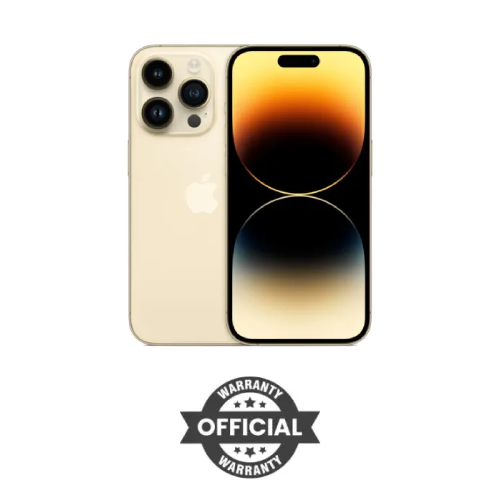
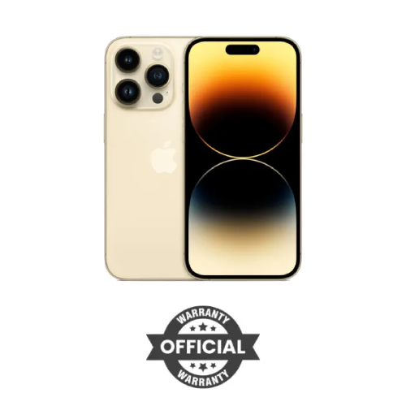

Home / Phone Apple Apple iPhone 14 Pro 256GB Gold (Singapore)


|
Apple iPhone 14 Pro 256GB Gold (Singapore)Key Features |
Desktop Laptop Component Monitor UPS Phone Tablet Office Equipment Camera Security Networking Software Server & Storage Accessories Gadget Gaming TV AC |
|
Home / Phone Apple Apple iPhone 14 Pro 256GB Gold (Singapore) |
|
| Share: bookmark_border Save library_add Add to Compare |
|

|
Apple iPhone 14 Pro 256GB Gold (Singapore)Key Features |
| Display | |
|---|---|
| Size | 6.1‑inch |
| type | Super Retina XDR display All‑screen OLED display |
| Resolution | 2556x1179-pixel resolution at 460 ppi |
| Refresh Rate | ProMotion technology with adaptive refresh rates up to 120Hz |
| Brightness | 1,000 nits max brightness (typical); 1,600 nits peak brightness (HDR); 2,000 nits peak brightness (outdoor) |
| Features | Dynamic Island Always-On display HDR display True Tone Wide colour (P3) Haptic Touch 2,000,000:1 contrast ratio (typical) Fingerprint-resistant oleophobic coating Support for display of multiple languages and characters simultaneously |
Processor |
| Chipset | A16 Bionic chip |
| CPU Type | 6‑core CPU with 2 performance and 4 efficiency cores 16‑core Neural Engine |
| GPU | 5-core GPU | Memory |
| RAM | 6GB |
| Internal Storage | 256GB |
| Card Slot | N/A | Rear Camera |
| Resolution | Pro camera system (48MP Main, 12MP Ultra Wide, and 12MP Telephoto) |
| Features | Main: ƒ/1.78 aperture valign="top Ultra Wide: ƒ/2.2 aperture Telephoto: ƒ/2.8 aperture Second-generation sensor-shift optical image stabilization .5x, 1x, 2x, 3x optical zoom options Sapphire crystal lens cover Adaptive True Tone flash Photonic Engine Deep Fusion Smart HDR 4 Portrait mode with advanced bokeh and Depth Control Portrait Lighting with six effects (Natural, Studio, Contour, Stage, Stage Mono, High-Key Mono) Night mode Night mode portraits enabled by LiDAR Scanner Panorama (up to 63MP) Photographic Styles Macro photography Apple ProRAW Wide colour capture for photos and Live Photos Lens correction (Ultra Wide) Advanced red-eye correction Auto image stabilisation Burst mode Photo geotagging Image formats captured: HEIF, JPEG and DNG |
| Video Recording | 4K video recording at 24 fps, 25 fps, 30 fps or 60 fps 1080p HD video recording at 25 fps, 30 fps or 60 fps 720p HD video recording at 30 fps Cinematic mode up to 4K HDR at 30 fps Action mode up to 2.8K at 60 fps HDR video recording with Dolby Vision up to 4K at 60 fps ProRes video recording up to 1080p at 30 fps Macro video recording, including slow motion and time-lapse Slow-motion video support for 1080p at 120 fps or 240 fps Time-lapse video with stabilisation Night mode Time-lapse QuickTake video Second‑generation sensor‑shift optical image stabilisation for video (Main) Dual optical image stabilisation for video (Main and Telephoto) 3x optical zoom in, 2x optical zoom out; 6x optical zoom range Digital zoom up to 9x Audio zoom True Tone flash Cinematic video stabilisation (4K, 1080p and 720p) Continuous autofocus video Take 8MP still photos while recording 4K video Playback zoom Video formats recorded: HEVC, H.264 and ProRes Stereo recording |
Front Camera |
| Resolution | TrueDepth front camera (12MP camera) |
| Features | ƒ/1.9 aperture Autofocus with Focus Pixels Six-element lens Retina Flash Photonic Engine Deep Fusion Smart HDR 4 Portrait mode with advanced bokeh and Depth Control Portrait Lighting with six effects (Natural, Studio, Contour, Stage, Stage Mono, High‑Key Mono) Animoji and Memoji Night mode Photographic Styles Apple ProRAW Wide colour capture for photos and Live Photos Lens correction Auto image stabilisation Burst mode |
| Video Recording | 4K video recording at 24 fps, 25 fps, 30 fps or 60 fps 1080p HD video recording at 25 fps, 30 fps or 60 fps Cinematic mode up to 4K HDR at 30 fps HDR video recording with Dolby Vision up to 4K at 60 fps ProRes video recording up to 1080p at 30 fps Slow-motion video support for 1080p at 240 fps Time-lapse video with stabilisation Night mode Time-lapse QuickTake video Cinematic video stabilisation (4K, 1080p and 720p) |
Audio |
| Speaker | Built‑in stereo speaker |
| Audio Features | Supported formats include AAC, MP3, Apple Lossless, FLAC, Dolby Digital, Dolby Digital Plus and Dolby Atmos Spatial Audio playback User-configurable maximum volume limit |
Network & Connectivity |
| SIM | 1 SIM and 1 eSIM |
| Wi-Fi | 5G (sub‑6 GHz) with 4x4 MIMO Gigabit LTE with 4x4 MIMO and LAA Wi‑Fi 6 (802.11ax) with 2x2 MIMO |
| Bluetooth | Bluetooth 5.3 |
| GPS | Precision dual-frequency GPS (GPS, GLONASS, Galileo, QZSS and BeiDou) Digital compass Wi-Fi Mobile data iBeacon micro-location |
| NFC | NFC with reader mode |
| Audio Jack | N/A | OS |
| Operating System | iOS 16 | Features |
| Sensors | Face ID LiDAR Scanner Barometer High dynamic range gyro High-g accelerometer Proximity sensor Dual ambient light sensor |
| IP Rating | Rated IP68 (maximum depth of 6 metres for up to 30 minutes) under IEC standard 60529 |
| Other Features | Face ID (Enabled by TrueDepth camera for facial recognition) Apple Pay (Pay with your iPhone using Face ID in stores, within apps and on the web) Safety: Emergency SOS, Crash Detection |
Battery |
| Type | Built‑in rechargeable lithium‑ion battery |
| Fast Charging | MagSafe wireless charging up to 15W Qi wireless charging up to 7.5W Charging via USB to computer system or power adapter Fast-charge capable Up to 50% charge in around 30 minutes11 with 20W adapter or higher (available separately) |
Physical specification |
| Dimension | Height: 147.5mm Width: 71.5mm Depth: 7.85mm |
| Weight | 206g |
| Body Material | Ceramic Shield front Textured matt glass back and stainless steel design |
Description
|
What is the price of Apple iPhone 14 Pro 256GB Gold in Bangladesh?The latest price of Apple iPhone 14 Pro 256GB Gold in Bangladesh is 200,000৳. You can buy the Apple iPhone 14 Pro 256GB Gold at best price from our website or visit any of our showrooms. |
Questions (0)Have question about this product? Get specific details about this product from expert. |
Reviews (0)Get specific details about this product from customers who own it. |